4. Templates und Formulare
Bisher haben die Views ihre Antworten selbst erzeugt: Text, JSON und ein paar als Zeichenkette geschriebene HTML-Tags. In einer MVC-Anwendung ist die Erzeugung der Seite die Aufgabe des V, das bei [Django] Template heißt: eine Datei, die die Seite beschreibt, mit Platzhaltern für die Daten, die ihr die View übergibt – den Template-Kontext (das M, das Modell des MVC; siehe Einleitung).
[Django] hat eine eigene Template-Engine und eine eigene Template-Sprache, DTL (Django Template Language). Es kann auch andere Engines verwenden, etwa [Jinja2], die von [Flask] verwendet wird (Einstellung [TEMPLATES]); dieses Dokument konzentriert sich auf DTL, das alle [Django]-Anwendungen verwenden. Ein Template ist eine Textdatei, hier HTML (erkennbar an der Endung [.html]), die in einem Ordner namens [templates] liegt und in der drei Arten von Tags auf dem Server interpretiert werden:
- [{{ variable }}]: der Wert einer Kontextvariablen, der in die Seite eingefügt wird;
- [{% tag %}]: ein Tag, das die Engine steuert: Bedingung ([{% if %}]), Schleife ([{% for %}]), Template-Vererbung ([{% extends %}], [{% block %}]), Einbindung ([{% include %}]), Erzeugung einer URL ([{% url %}]) ...;
- [{# comment #}]: ein Kommentar, der auf der erzeugten Seite nicht erscheint. Er passt in eine einzige Zeile; ein mehrzeiliger Kommentar wird zwischen die Tags [{% comment %}] und [{% endcomment %}] gesetzt.
Alles andere wird unverändert übernommen. Die Ausdrücke sind nicht in [Python] geschrieben, sondern in der bewusst eingeschränkten Sprache von DTL: [model.title] bezeichnet den Schlüssel [title] eines Dictionarys, das Attribut [title] eines Objekts oder das Element [title] einer Liste ([Django] probiert sie in dieser Reihenfolge aus), und wenn es sich um eine Methode handelt, ruft [Django] sie ohne Parameter auf; Filter transformieren einen Wert ([name|upper] schreibt einen Namen in Großbuchstaben); Tags führen Aktionen aus. Das ist alles: DTL kennt keine arithmetischen Operatoren, keine Funktionsaufrufe mit Parametern und keine Zuweisungen. Das ist Absicht: Die Entwickler von [Django] wollten, dass Templates von Grafikdesignern geschrieben werden können, ohne dass Anwendungslogik in die Seiten gelangt. Eine Berechnung erfolgt daher in [Python] – entweder in der View oder in einer Methode eines Kontextobjekts – und das Template zeigt lediglich das Ergebnis an. Die Sprachen von [Twig] ([Symfony]) und [Jinja2] ([Flask]), die sich daran orientiert haben, sind freizügiger: Sie führen Berechnungen aus ([total / count]) und rufen Funktionen mit Parametern auf. Schließlich wird ein Template nicht bei jeder Anfrage neu geparst: Bei der ersten Verwendung parst [Django] es und wandelt es in eine Liste von Knoten um, ein [Python]-Objekt, das es im Speicher behält und danach wiederverwendet (im Debug-Modus parst es das Template neu, wenn es geändert wurde). Wir werden sehen, wie diese Liste aussieht.
4.1. Beispiel 13: Ein erstes Template
4.1.1. Die Konfiguration: config/settings.py
Die Template-Engine wird über die Einstellung [TEMPLATES] konfiguriert:
- Zeilen 19–24: [TEMPLATES] ist eine Liste von Template-Engines, die jeweils durch ein Dictionary beschrieben werden. Hier gibt es nur eine: [BACKEND] bezeichnet die Engine [Django] (DTL); [DIRS] ist die Liste der Ordner, in denen sie nach Templates sucht: der Ordner [templates] des Projekts. Die Konfiguration kann die Engine auch anweisen, im Ordner [templates] jeder Anwendung aus der Einstellung [INSTALLED_APPS] nach Templates zu suchen ([APP_DIRS: True], Beispiel 18): So stellt eine wiederverwendbare Anwendung ihre eigenen Templates bereit.
Die Templates liegen in einem Unterordner namens [pages], der nach der Anwendung benannt ist: Das ist übliche Praxis und verhindert, dass zwei Anwendungen jeweils ein Template [index.html] haben und eines das andere überschreibt.
4.1.2. Der Template-Kontext: pages/viewmodels.py
Der Kontext eines Templates ist ein [Python]-Dictionary. Hier enthält er nur einen Eintrag, [model], ein unveränderliches Objekt der Klasse [PageModel] (siehe Beispiel 03), das die drei Informationen enthält, die das Template anzeigt. Es ist nicht zwingend, den Kontext eines Templates mit einer Klasse zu definieren: Man könnte dem Template drei einzelne Variablen übergeben. Eine Klasse dokumentiert jedoch, was das Template erwartet, und erlaubt dem Editor, den Code der View zu überprüfen. Diesen Ansatz verfolgt die Fallstudie, in der jede wichtige Seite eine eigene Kontextklasse hat.
4.1.3. Views: pages/views.py
- Zeilen 16–20: Die View erzeugt das Modell. [timezone.localtime()] aus dem Modul [django.utils.timezone] liefert die aktuelle Uhrzeit in der Zeitzone der Anwendung (Einstellung [TIME_ZONE], [Europe/Paris]); [strftime] formatiert sie: [%H] für Stunden, [%M] für Minuten, [%S] für Sekunden;
- Zeile 21: Die Abkürzung [render] (aus dem Modul [django.shortcuts], Beispiel 04) veranlasst die Template-Engine, die Seite zu erzeugen. Sie erhält die Anfrage, den Namen des Templates (den Dateipfad relativ zu einem der Template-Ordner) und den Kontext: ein Dictionary, dessen Schlüssel jeweils zu einer Template-Variablen werden – hier nur eine: [model]. [render] gibt ein [HttpResponse]-Objekt zurück, dessen Body die gerenderte Seite ist (vom Typ [text/html]);
- Zeilen 27–29: ein anderes Template mit einer anderen Variablen ([name]). Der Parameter [status] von [render] legt den Antwortcode fest: hier 404, für eine eigene Fehlerseite;
- Zeilen 30–34: dasselbe Template wie bei der View [index], mit einem anderen Modell. Das ist der Vorteil der Trennung von Views und Templates: Ein einziges Template kann für mehrere Views verwendet werden.
Die Routen ([pages/urls.py]) ordnen [/] der View [index] zu und [/hello/<str:name>] der View [hello] zu.
4.1.4. Das Template: templates/pages/index.html
- Zeile 5: ein Kommentar von DTL;
- Zeile 6: [{{ model.title }}] fügt den Wert des Attributs [title] der Variablen [model] ein. Der Punkt ist der Zugriffsoperator von DTL, während [Python] je nach Fall [model.title] oder [model["title"]] schreiben würde.
Alles, was durch [{{ }}] eingefügt wird, wird maskiert: Die Zeichen [<], [>], [&], ["] und ['] werden durch ihre HTML-Entitäten ersetzt. Diese Rolle spielte in Beispiel 09 die Funktion [format_html], doch hier geschieht es automatisch: Ein Template kann daher nicht versehentlich vom Benutzer gelieferten HTML-Code in die Seite einfügen.
4.1.5. Das Template: templates/pages/unknown.html
Ein Template muss kein Objekt akzeptieren: Die Variable [name] ist eine Zeichenkette.
4.1.6. Ausführung


Die angezeigte Uhrzeit ist die der Zeitzone der Anwendung. Die Rohantwort zeigt, wie die Engine arbeitet: Die Tags [{{ }}] wurden durch ihre Werte ersetzt, und der Kommentar ist verschwunden (zurück bleibt eine leere Zeile mit seiner Einrückung).
Die „eigene“ Fehlerseite, gefolgt von einem Namen, der HTML und einen Apostroph enthält ([<b>martin'], als URL codiert):
Das Tag [<b>] wurde maskiert, ohne dass die View oder das Template etwas dafür tun mussten (auch der Apostroph wurde maskiert: [']). Hier schließlich das Template, so wie [Django] es im Speicher ablegt. Der Befehl [python manage.py shell] öffnet eine [Python]-Konsole, in der [Django] bereitsteht; die Option [-c] bewirkt, dass sie einige Anweisungen ausführt:
Das Template ist zu einer Liste von Knoten geworden: Textstücke ([TextNode], deren Anzeige gekürzt ist), die unverändert kopiert werden, und Variablen ([VariableNode]), deren Werte im Kontext nachgeschlagen und anschließend maskiert werden. Der Kommentar hat keine Knoten hinterlassen. Zum Erzeugen der Seite wird diese Liste durchlaufen und die Textfragmente werden wieder zusammengesetzt. Ein Template ist also einfach eine sicherere und besser lesbare Art, eine [Python]-Funktion zu schreiben, die HTML erzeugt.
4.2. Beispiel 14: Die Template-Sprache
Dieses Beispiel vereint die wichtigsten Konstrukte von DTL in einem einzigen Template.
4.2.1. Das Modell und die View
Das Modell des Templates wird durch drei unveränderliche Datenklassen beschrieben:
- Zeile 24: [str | None]: eine Zeichenkette oder [None] (Beispiel 06);
- Zeilen 28–29: Listen von [Product]-Objekten;
- Zeilen 34–40: Da DTL keine Berechnungen ausführen kann, sind die vom Template benötigten Berechnungen (Gesamtpreis, Durchschnittspreis) Methoden des Modells. Der Dekorator [@property] macht aus einer Methode eine Eigenschaft: Sie wird wie ein Attribut ohne Klammern gelesen ([model.total]), und so sieht DTL sie. Der Einfachheit halber sind die Preise hier vom Typ [float] (Beispiel 06 hat gezeigt, warum wir ganze Cent bevorzugen).
Das Modell enthält Werte verschiedener Typen: Zeichenketten, [None], boolesche Werte, Objektlisten, leere Listen und Objekte, die andere Objekte enthalten.
Die View erzeugt das Modell mit benannten Parametern (siehe Beispiel 02): Jedem Wert geht der Name des Attributs voran, für das er bestimmt ist, was den Aufruf trotz der Parameterzahl lesbar macht.
4.2.2. Das Template: templates/basics/index.html
- Zeilen 9–13: ein mehrzeiliger Kommentar;
- Zeile 14: Ein Wert [None] wird angezeigt ... [None]: Das ist die Textdarstellung von [None]. Der Filter [default] ersetzt einen „leeren“ Wert ([None], leere Zeichenkette, 0, leere Liste ...) durch einen Standardwert. Ein Filter wird mit einem senkrechten Strich angewendet und kann nach einem Doppelpunkt einen optionalen Parameter erhalten: [value|filter:"parameter"]. Eine Variable, die im Kontext überhaupt nicht existiert ([model.unknown]), würde als leere Zeichenkette ohne Fehler angezeigt;
- Zeilen 16–17: [{{ }}] maskiert HTML (2a); dagegen fügt der Filter [safe] den Wert unverändert und ohne Maskierung ein (2b). [safe] ist für HTML reserviert, das die Anwendung selbst erzeugt hat, niemals für Benutzereingaben. Das Tag [{% autoescape off %}] deaktiviert die Maskierung für einen ganzen Abschnitt des Templates;
- Zeilen 19–23: eine Bedingung: [{% if %}], [{% elif %}], [{% else %}], [{% endif %}]. Jeder Block wird durch ein Tag [{% end... %}] geschlossen. Eine Bedingung kann die Operatoren [==], [!=], [<], [>], [<=], [>=], [in], [not], [and], [or] verwenden;
- Zeilen 27–33: eine Schleife [{% for ... in ... %}] ... [{% endfor %}]. Innerhalb der Schleife beschreibt die spezielle Variable [forloop] den Zustand der Schleife: [forloop.counter0] (die Nummer des Durchlaufs, beginnend bei 0), [forloop.counter] (beginnend bei 1), [forloop.first], [forloop.last] (wahr beim ersten bzw. letzten Durchlauf), [forloop.revcounter] (die Anzahl der verbleibenden Durchläufe). Die Variablen außerhalb der Schleife ([model.name], [model.currency]) bleiben zugänglich;
- Zeile 29: Der Filter [yesno] wählt einen Text danach aus, ob ein Wert wahr oder falsch ist: Seine zwei Texte (ein dritter, optionaler Text würde für [None] verwendet) werden durch ein Komma getrennt. Das ist in DTL das Äquivalent eines bedingten Ausdrucks;
- Zeile 37: Eine [for]-Schleife kann einen [{% empty %}]-Block haben, der ausgeführt wird, wenn die Liste leer ist. Das ist einfacher als ein [{% if %}]-Tag, das die Länge der Liste prüft;
- Zeilen 43–46: Das Tag [{% with %}] erzeugt eine Variable, die bis [{% endwith %}] gültig ist: hier die Anzahl der Produkte, berechnet durch den Filter [length] (die Anzahl der Elemente einer Liste bzw. der Zeichen einer Zeichenkette);
- Zeilen 44–45: die berechneten Eigenschaften des Modells. Der Filter [floatformat] rundet eine Zahl – [floatformat:2] – auf zwei Nachkommastellen. Er formatiert die Zahl gemäß den Konventionen der Sprache der Anwendung ([LANGUAGE_CODE]): Der Dezimalpunkt ist für Englisch formatiert. Alle in eine Seite eingefügten Zahlen werden auf diese Weise formatiert: [Django] formatiert Zahlen und Datumsangaben gemäß der aktiven Sprache (auf Französisch würde aus [12.5] [12,5]);
- Zeile 48: Der Punkt kann Objekte durchlaufen ([model.address.city]), und der Filter [upper] schreibt eine Zeichenkette in Großbuchstaben (und behandelt dabei akzentuierte Zeichen korrekt);
- Zeile 50: Das Tag [{% verbatim %}] kopiert seinen Inhalt, ohne ihn zu interpretieren: Das ist nützlich, wenn eine Seite geschweifte Klammern enthält, die für ein [JavaScript]-Framework bestimmt sind.
DTL hat etwa sechzig Filter ([lower], [capfirst], [title], [truncatechars], [join], [slice], [first], [last], [date], [time], [linebreaks], [urlize], [pluralize], [add], [divisibleby], [escape], [json_script] ...) und etwa dreißig Tags ([if], [for], [with], [url], [now], [cycle], [firstof], [include], [extends], [block], [load], [csrf_token], [spaceless] ...). Die [Django]-Anwendungen ergänzen weitere ([static], [translate] ...), und die Anwendung kann eigene schreiben (Beispiel 16).
4.2.3. Ausführung

Die erzeugte Seite:
Die Kommentare und Tags sind verschwunden, aber ihre Leerzeichen und Zeilenumbrüche bleiben zurück: [Django] entfernt keinen Leerraum. Das hat keine Auswirkung: Der Browser ignoriert diesen Leerraum. (Das Tag [{% spaceless %}] würde den Leerraum zwischen den HTML-Tags in einem Abschnitt des Templates entfernen.) Die Zahlen wurden im englischen Stil geschrieben ([12.5], [186.5]), obwohl das Template dies nicht verlangt hat.
4.3. Beispiel 15: Übergeordnetes Template, Fragmente, statische Dateien
Die Seiten einer Website haben meist dieselbe Struktur: eine Kopfzeile, eine Navigationsleiste, eine Fußzeile und dieselben Stylesheets. Statt diese Struktur in jedem Template zu wiederholen, wird sie einmal in einem übergeordneten Template (auch Layout genannt) geschrieben, das die Seiten erweitern. Dieses Beispiel verwendet außerdem [Bootstrap], das am weitesten verbreitete CSS-Framework, für das Layout.
4.3.1. Statische Dateien
Eine HTML-Seite verweist auf weitere Dateien: Stylesheets, [JavaScript]-Skripte und Bilder. Diese Dateien, die der Server unverändert sendet, heißen statische Dateien. Bei [Django] liegen sie in Ordnern namens [static] (dem Projektordner und den Anwendungsordnern), und die Anwendung [django.contrib.staticfiles] verwaltet sie. Die Konfiguration:
- Zeilen 14–19: die Anwendung [django.contrib.staticfiles], eine der mit [Django] gelieferten Anwendungen;
- Zeilen 21–34: die Template-Engine mit zwei Kontextprozessoren, die später beschrieben werden;
- Zeile 37: [STATIC_URL], das Präfix für die URLs statischer Dateien: Die Datei [css/styles.css] wird unter der URL [/static/css/styles.css] verfügbar sein;
- Zeilen 40–43: [STATICFILES_DIRS], die Liste der Ordner mit statischen Dateien des Projekts (zusätzlich zu den [static]-Ordnern der Anwendungen). Der erste ist der des Beispiels. Der zweite ist der Ordner [examples/common/static], der [Bootstrap] enthält: Statt in jedes Beispiel eine Kopie aufzunehmen, teilen sich die Beispiele 15 bis 28 diesen Ordner (siehe Einleitung). [Django] sucht eine Datei der Reihe nach in all diesen Ordnern und gibt die erste gefundene zurück.
Im Debug-Modus liefert der Entwicklungsserver die statischen Dateien selbst über die Anwendung [staticfiles] aus: Eine URL, die mit [/static/] beginnt, wird nicht von den Routen der Anwendung behandelt, sondern vom Handler für statische Dateien. In der Produktion ([DEBUG = False]) tut er das nicht mehr: Das ist nicht die Aufgabe einer [Python]-Anwendung. Der Befehl [python manage.py collectstatic] kopiert dann alle statischen Dateien des Projekts und der Anwendungen in einen einzigen Ordner (die Einstellung [STATIC_ROOT]), den der Webserver ([nginx], [Apache] ...) direkt ausliefert oder der von einer Bibliothek wie [WhiteNoise] ausgeliefert wird (siehe Fallstudie).
Ein paar zusätzliche CSS-Regeln zu [Bootstrap]: ein hellgrauer Hintergrund, der Stil der Fußzeile und der Stil eines Fehlerbereichs, der in den folgenden Beispielen verwendet wird.
4.3.2. Das übergeordnete Template: templates/layout.html
- Zeile 3: [{% load static %}] lädt eine Tag-Bibliothek: die der Anwendung [staticfiles], die das Tag [{% static %}] bereitstellt. Tags und Filter, die nicht zum Kern von DTL gehören, liegen in Bibliotheken, die ein Template laden muss, bevor es sie verwendet;
- Zeile 7: Das Tag [viewport] weist mobile Browser an, die Seite in der Breite des Bildschirms darzustellen, was [Bootstrap] erwartet;
- Zeile 9: Das Tag [{% block %}] kennzeichnet einen benannten Platzhalter, den Seiten, die das Template erweitern, durch einen Block gleichen Namens füllen können. Der zwischen [{% block title %}] und [{% endblock %}] geschriebene Inhalt ist der Standardinhalt des Platzhalters, den eine Seite verwendet, die diesen Block nicht definiert. [site_name] ist eine globale Variable, die in allen Templates vorhanden ist (siehe [config/contexts.py] weiter unten);
- Zeilen 11–12: [{% static 'path' %}] erzeugt die URL einer statischen Datei: [STATIC_URL] gefolgt vom Pfad. Die URL von Hand zu schreiben ([/static/css/styles.css]) würde ebenfalls funktionieren, aber [{% static %}] passt sich an, wenn Sie [STATIC_URL] ändern (um die Dateien beispielsweise von einer anderen Website auszuliefern) oder wenn Sie den Dateinamen zu Caching-Zwecken einen Hash ihres Inhalts hinzufügen (Fallstudie);
- Zeile 17: [{% include %}] fügt den Inhalt eines anderen Templates ein, hier die Navigationsleiste. Das eingebundene Template sieht die Variablen des Templates, das es einbindet;
- Zeile 20: der Platzhalter, den jede Seite mit ihrem eigenen Inhalt füllt;
- Zeile 23: Die Variable [request] ist die aktuelle Anfrage ([request.path]: der Pfad der angeforderten URL). Sie ist dank des Kontextprozessors [request] (siehe unten) in allen Templates vorhanden. Das Tag [{% now "Y" %}] schreibt das aktuelle Datum im folgenden Format: [Y], also das Jahr vierstellig.
Die Klasse [container] von [Bootstrap] zentriert den Inhalt und begrenzt seine Breite; [py-3] fügt vertikalen Innenabstand hinzu: [Bootstrap] bietet Hunderte solcher Klassen, die im Attribut [class] kombiniert werden.
4.3.3. Globale Variablen: config/contexts.py
Ein Kontextprozessor ist eine Funktion, die die Anfrage erhält und ein Dictionary von Variablen zurückgibt, die dem Kontext aller Templates hinzugefügt werden. [Django] ruft die Prozessoren aus der Einstellung [context_processors] (Zeilen 28–31 der Datei [config/settings.py]) bei jeder Erzeugung eines Templates mit der Anfrage auf (wie bei [render(request, ...)]). Der Prozessor [django.template.context_processors.request], der zum Lieferumfang von [Django] gehört, fügt die Variable [request] hinzu; unserer fügt [site_name] hinzu. Weitere Anwendungen von [Django] liefern eigene: Meldungen (Beispiel 20), Sprache (Beispiel 22) ... Ein Prozessor wird für jedes erzeugte Template aufgerufen: Er muss schnell sein.
4.3.4. Die Navigationsleiste: templates/fragments/navbar.html
Ein Fragment: ein Teil einer Seite, der für sich genommen keine Bedeutung hat. Die Klassen [navbar], [navbar-brand] und [nav-link] sind die der Navigationsleiste von [Bootstrap]. Die Links werden vom Tag [{% url %}] (Zeile 6) anhand der Routennamen erzeugt (Beispiel 04): [{% url 'team' %}] ergibt [/team]. Die Routenparameter folgen dem Namen: [{% url 'contacts_details' contact.id %}] (Beispiel 21).
4.3.5. Benannte Fragmente: templates/macros.html
- Zeilen 4–11: Das Tag [{% partialdef %}], eingeführt mit [Django] 6.0, definiert ein benanntes Fragment (Partial): einen Teil eines Templates, hier eine Karte ([card]) aus [Bootstrap]. Eine Datei kann mehrere davon enthalten. So definiert, wird das Fragment nicht dort angezeigt, wo es geschrieben ist: Es wird an anderer Stelle angezeigt, mit [{% include "macros.html#card" %}] (dem Dateinamen, einem Rautenzeichen und dem Fragmentnamen) oder innerhalb derselben Datei mit [{% partial card %}]. Das Fragment zeigt zwei Variablen an, [name] und [role], die ihm beim Einbinden übergeben werden.
Teilnehmer des [Symfony]-Kurses erkennen wieder, wie dieser Kurs die Makros von [Twig] verwendet hat. Es gibt einen Unterschied: Ein Makro von [Twig] konnte nur seine eigenen Parameter sehen; ein eingebundenes Fragment sieht zusätzlich zu den ihm übergebenen alle Variablen des Templates, das es einbindet. Das Schlüsselwort [only] ([{% include "..." with name="..." only %}]) beschränkt es auf Letztere. Für eine komplexere Komponente, die [Python]-Code erfordert, schreibt man ein Inclusion-Tag (Beispiel 16).
4.3.6. Die Seiten
- Zeile 2: Die Seite erweitert das übergeordnete Template: [Django] erzeugt die übergeordnete Seite und ersetzt deren Blöcke durch die von der Seite definierten. [{% extends %}] muss das erste Tag im Template sein (nur ein Kommentar [{# #}] darf ihm vorausgehen). In einem Template, das ein anderes erweitert, muss sich der gesamte Inhalt in Blöcken befinden: Außerhalb von Blöcken geschriebener Text erscheint nicht auf der erzeugten Seite;
- Zeilen 4–10: der Block [content], der den gleichnamigen Platzhalter füllt. Die Seite definiert den Block [title] nicht: Der Platzhalter behält seinen Standardinhalt, „Home“;
- Zeile 9: die Einbindung des Fragments [card] mit zwei Variablen, die nach dem Schlüsselwort [with] angegeben werden. Das HTML im Fragment wird nicht ein zweites Mal maskiert: [Django] weiß, dass es bereits sicheres HTML ist (die Variablen wurden allerdings innerhalb des Fragments maskiert).
- Zeile 3: der Block [title] in einer einzigen Zeile;
- Zeilen 7–14: eine Karte pro Teammitglied in einem Raster von [Bootstrap] ([row], [col-md-4]: drei Spalten auf einem mittleren oder großen Bildschirm, eine Spalte auf einem schmalen Bildschirm);
- Zeile 11: Die an das Fragment übergebenen Variablen können beliebige Ausdrücke sein.
Ein Block im übergeordneten Template kann auch ergänzt statt ersetzt werden: [{{ block.super }}], im Block der Seite geschrieben, fügt den Inhalt ein, den der Block im übergeordneten Template hatte. Ein Template kann ein Template erweitern, das seinerseits ein anderes erweitert: Die Vererbung hat so viele Ebenen wie nötig. Die View enthält nichts Neues:
Die dritte Seite schließlich verwendet das übergeordnete Template nicht:
4.3.7. Ausführung
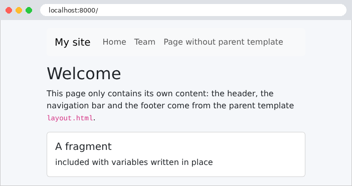
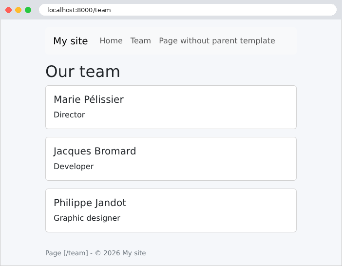

Da der Screenshot schmal ist, sind die Teamkarten untereinander angeordnet. Die Team-Seite, wie sie im Browser erscheint:
Der Browser hat eine vollständige Seite erhalten: Das übergeordnete Template, das Fragment der Navigationsleiste, die Seite und die Karten wurden auf dem Server zusammengesetzt. Die URLs der Stylesheets wurden von [{% static %}] berechnet: Es handelt sich um URLs , die für die Website spezifisch sind. Sie können prüfen, ob die Stylesheets korrekt ausgeliefert werden (die Option [-I] von [curl] zeigt beim Senden einer HEAD-Anfrage nur die Antwort-Header an):
Die erste Datei stammt aus dem Ordner [common/static], die zweite aus dem Ordner [static] des Beispiels: Für den Browser gibt es keinen Unterschied. Der Inhaltstyp wurde aus der Dateiendung abgeleitet ([text/css]): Ein Browser lehnt ein Stylesheet ab, das als etwas anderes deklariert ist. Zum Schluss ein Zugriffsversuch auf die Ordner mit den statischen Dateien:
(Die Optionen [-s -o /dev/null -w "%{http_code}\n"] zeigen nur den Antwortcode an; unter [Windows] verwendet man [-o NUL]). Die URL fordert die Datei [config/settings.py] des Beispiels an und steigt dabei zwei Ordner nach oben (die [/]-Zeichen sind als [%2F] codiert, damit weder [curl] noch der Browser den Pfad von sich aus vereinfacht). [Django] ist fehlgeschlagen: Die Konsole zeigt die Ausnahme [SuspiciousFileOperation] mit der Meldung „The joined path (...) is located outside of the base path component.“ Code 500 weist auf eine unbehandelte Ausnahme hin; entscheidend ist, dass die Datei nicht gesendet wurde.
4.4. Beispiel 16: Erweiterung der Template-Sprache
Ein Template muss oft Werte formatieren: einen Betrag mit seiner Währung, ein ausgeschriebenes Datum oder Text in Großbuchstaben. Dieser Code gehört nicht in die View (die sich nicht um die Darstellung kümmert), und DTL erlaubt nicht, ihn im Template zu schreiben (siehe die Einleitung zu diesem Kapitel). Stattdessen wird er in [Python] geschrieben, in einer Bibliothek von Tags und Filtern: einem Modul, das der Template-Sprache eigene Filter und Tags hinzufügt. Auch Komponenten, die aus Daten HTML-Fragmente erzeugen – die Inclusion-Tags –, werden in [Python] geschrieben.
4.4.1. Die Bibliothek: pages/templatetags/formats.py
Eine Tag-Bibliothek ist ein Modul im Paket [templatetags] einer Anwendung (die in [INSTALLED_APPS] deklariert sein muss); der Modulname ([formats]) ist der Name, den ein Template in [{% load formats %}] verwendet:
- Zeilen 4–5: zwei Funktionen aus der Bibliothek [Babel] (siehe Einleitung), die die Schreibkonventionen für Zahlen, Beträge und Datumsangaben aller Länder kennt (sie verwendet Daten des Unicode-Projekts CLDR);
- Zeile 7: [get_language] liefert die aktive Sprache der aktuellen Anfrage ([fr], [en]); wer sie setzt, sehen wir gleich;
- Zeile 10: Das Objekt [register], eine [template.Library], speichert die Filter und Tags des Moduls. Der Variablenname ist fest vorgegeben: Hier sucht [Django] nach ihnen;
- Zeilen 17–19: Ein Filter ist eine Funktion, die durch den Dekorator [@register.filter] unter ihrem eigenen Namen registriert wird, [money]. Ihr erster Parameter ist der gefilterte Wert; der zweite, optionale Parameter ist der Parameter des Filters im Template ([price|money:"USD"]): hier die Währung, bezeichnet durch ihren internationalen Code ([EUR], [USD]). Der Filter formatiert einen in Cent erhaltenen Betrag (siehe Beispiel 06). Die Formatierung hängt von der Sprache ab: Auf Französisch [1 149,90 €] (Leerzeichen als Tausendertrennzeichen, Dezimalkomma, Währungssymbol nach dem Betrag); auf Englisch [€1,149.90];
- Zeilen 23–25: Datumsformatierung: Das Format [full] schreibt das Datum vollständig aus, einschließlich des Wochentags ([Sunday, September 27, 2026]);
- Zeilen 31–36: ein Inclusion-Tag, definiert durch [@register.inclusion_tag]: eine Funktion, die einen Kontext berechnet, und ein Template (hier [tags/link.html]), das ihn anzeigt. In einem Template ruft [{% link 'products' '/products' 'Products' %}] die Funktion mit diesen drei Parametern auf und fügt dann das Template ein, das mit dem zurückgegebenen Dictionary aufgebaut wurde. Mit [takes_context=True] erhält die Funktion als ersten Parameter den Kontext des aufrufenden Templates: Dort findet sie die Anfrage und bestimmt, ob der Link auf die aktuelle Seite verweist ([startswith] prüft den Anfang einer Zeichenkette);
- Zeilen 40–42: ein zweites Inclusion-Tag ohne den Kontext: ein Badge.
Eine Bibliothek kann auch „einfache“ Tags ([@register.simple_tag]) bereitstellen, die einen Wert zurückgeben, sowie vollständige Tags, die ihren eigenen Inhalt parsen (wie [{% if %}]): Das ist seltener. Die Templates für die beiden Inclusion-Tags:
Der Link der aktuellen Seite erhält die Klasse [active] von [Bootstrap], die ihn hervorhebt. [{% url route %}] erzeugt die URL einer Route, deren Name in einer Variablen gespeichert ist. Das Badge ist grün ([text-bg-success]) oder rot ([text-bg-danger]), je nach Lagerbestand. Das Paket [templatetags] hat außerdem seine Datei [__init__.py]; ohne sie wäre es kein Paket.
4.4.2. Die Sprache jeder Anfrage: config/middleware.py
Jede Anfrage hat eine aktive Sprache, die standardmäßig der in der Einstellung [LANGUAGE_CODE] angegebenen entspricht. Hier wählt der Parameter [?lang=fr] der URL Französisch; Standardsprache ist Englisch. Eine Middleware-Komponente (Beispiel 03) legt sie vor jeder View mit der Funktion [translation.activate] fest: Das ist die Sprache, die [get_language] zurückgibt – die Sprache, in der [Django] Zahlen und Datumsangaben formatiert und seine eigenen Meldungen übersetzt (etwa die Fehlermeldungen von Formularen). Die aktive Sprache gilt für den Ausführungs-Thread, der die Anfrage bearbeitet: Zwei gleichzeitige Anfragen können unterschiedliche Sprachen haben. Sie wird nicht von einer Anfrage zur nächsten zurückgesetzt; deshalb legt die Middleware sie bei jeder Anfrage fest, auch für Englisch. Das Kapitel zur Internationalisierung wird diese Middleware durch die [Django]-Middleware [LocaleMiddleware] ersetzen und dieselbe Sprache zum Übersetzen der Texte verwenden.
4.4.3. Konfiguration: config/settings.py
- Zeilen 15–18: die Sprachen der Anwendung;
- Zeilen 20–25: Die Anwendung [pages] muss deklariert werden; [Django] sucht die Pakete [templatetags] in den Anwendungen aus [INSTALLED_APPS];
- Zeilen 27–29: die Sprach-Middleware.
4.4.4. Die View: pages/views.py
Views übergeben rohe Werte an Templates: ein Datum ([date.today()], das heutige Datum) und Beträge in Cent. Die Formatierung übernehmen die Templates. Der Gesamtwert des Lagerbestands ist dagegen eine Berechnung: Sie erfolgt in [Python] (Zeile 24), da DTL keine Berechnungen ausführen kann. Die Klasse [Product] vereint einen Namen, einen Preis (in Cent; siehe Beispiel 06) und eine Lagermenge.
4.4.5. Die Templates
- Zeile 1: Das Fragment lädt die Bibliothek, die es benötigt, selbst: Mit [{% load %}] geladene Bibliotheken werden nicht an eingebundene Templates oder an Templates weitergegeben, die ein übergeordnetes Template erweitern. Jedes Template lädt seine eigenen Bibliotheken;
- Zeile 6: dasselbe wie beim Tag [link], aber direkt im Template mit einer Bedingung geschrieben. [request.resolver_match] beschreibt das Ergebnis des Routings der aktuellen Anfrage: [url_name] ist der Name der Route. Das Tag erspart es, die Bedingung für jeden Link zu wiederholen;
- Zeile 8: der Aufruf des Tags mit seinen drei durch Leerzeichen getrennten Parametern;
- Zeile 10: [{% url %}] erzeugt nur den Pfad: Die URL-Parameter werden von Hand hinzugefügt ([?lang=fr]).
- Zeile 2: Die Seite lädt zwei Bibliotheken: [i18n], die Internationalisierungsbibliothek von [Django], und unsere eigene;
- Zeile 8: unser Filter [long_date];
- Zeilen 10–11: Das Tag [{% get_current_language as language %}] aus der Bibliothek [i18n] speichert die aktive Sprache in einer Template-Variablen.
- Zeile 13: ein Filter von [Django];
- Zeilen 14–15: unser Filter [money], zuerst mit seiner Standardwährung, dann mit einem Parameter;
- Zeile 17: der Aufruf des Tags [badge];
- Zeile 22: der Gesamtwert des Lagerbestands, von der View berechnet.
Das übergeordnete Template [layout.html] ist eine vereinfachte Version desjenigen aus Beispiel 15; sein Attribut [lang] erhält die aktive Sprache ([<html lang="{{ language }}">], nach [{% get_current_language as language %}]).
4.4.6. Ausführung

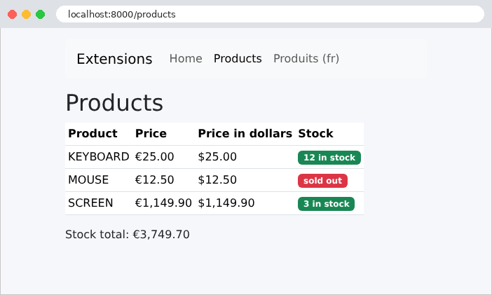
Dieselbe Seite mit dem Parameter [?lang=fr]. Nur die Formatierung der Zahlen ändert sich: Der Text selbst ist in den Templates fest einprogrammiert. Das Kapitel zur Internationalisierung wird auch den Text übersetzen.
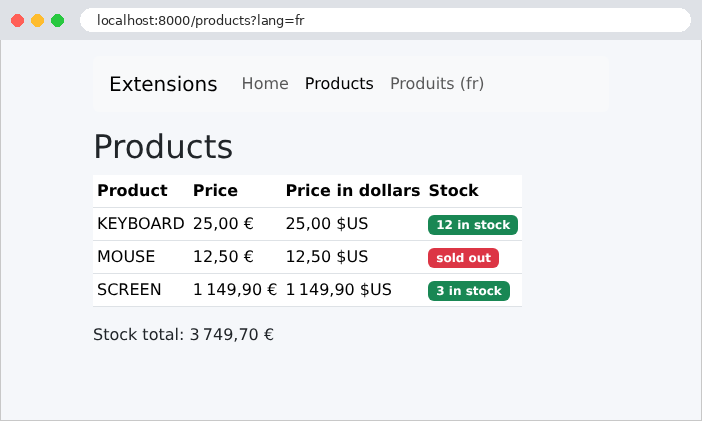
Der erzeugte HTML-Code (Auszug):
4.5. Beispiel 17: ein GET-Formular
Ein HTML-Formular sendet seine Felder je nach seinem Attribut [method] auf eine von zwei Arten an den Server:
- [method="get"]: Die Felder werden der URL als Parameter angehängt ([/search?keyword=le&genre=novel]). Diese Methode verwendet ein Formular, das eine Abfrage durchführt: eine Suche oder einen Filter. Die URL mit den Ergebnissen kann als Lesezeichen gespeichert, geteilt oder gefahrlos neu geladen werden;
- [method="post"]: Die Felder werden in den Body der Anfrage aufgenommen (siehe Beispiel 11). Diese Methode verwendet ein Formular, das Daten ändert: eine Registrierung, ein Hinzufügen oder ein Löschen.
Dieses erste Formular ist eine Buchsuche. Es ist im Template von Hand in HTML geschrieben: Die folgenden Beispiele verwenden die Formular-Templates von [Django].
4.5.1. Das Modell: books/viewmodels.py
- Zeilen 14–19: Das Modell enthält die Eingaben des Benutzers, die das Formular anzeigen wird, die Liste der vorgeschlagenen Genres und die Ergebnisse.
4.5.2. Die View: books/views.py
- Zeilen 9–16: zwei Modulkonstanten: die Liste der Genres und die Liste der Bücher. In einer realen Anwendung kämen diese aus einer Datenbank;
- Zeilen 20–21: eine einzige View, auf die zwei Routen verweisen ([config/urls.py]: [""] und ["search"], mit den Namen [books_home] und [books_search]). Beim ersten Aufruf ([/]) gibt es keine Parameter, und alle Bücher werden angezeigt;
- Zeilen 22–23: Die Formularfelder werden als URL-Parameter gelesen (Beispiel 07), mit einer leeren Zeichenkette als Standardwert;
- Zeilen 24–28: Das Filtern erfolgt mit einer List Comprehension mit Bedingung ([if]): Ein Buch wird ausgewählt, wenn das Schlüsselwort leer ist oder in seinem Titel oder Autor vorkommt (auf beiden Seiten in Kleinbuchstaben: [lower()] behandelt akzentuierte Zeichen korrekt) und wenn das Genre leer ist oder dem Genre des Buches entspricht. Eine Bedingung kann sich über mehrere Zeilen erstrecken, wenn sie in Klammern eingeschlossen ist;
- Zeilen 29–31: das Template.
4.5.3. Das Template: templates/books/search.html
- Zeile 6: Das Tag [<form>]. Das Attribut [action] ist die URL, an die das Formular gesendet wird; [method="get"] legt die Felder in die URL. Die Klassen von [Bootstrap] ordnen die Felder in einer einzigen Zeile an;
- Zeile 8: ein Label. Sein Attribut [for] gibt den Bezeichner ([id]) des Feldes an, das es beschreibt: Ein Klick auf das Label setzt den Cursor in das Feld, und Screenreader lesen das Label zusammen mit dem Feld vor;
- Zeile 10: ein Eingabefeld. Sein Attribut [name] ist der Name des an den Server gesendeten Parameters: Das ist die Verbindung zwischen Formular und View ([request.GET.get("keyword", "")]). Das Attribut [value] ist der angezeigte Wert: die vorherige Eingabe, erneut angezeigt (und von [{{ }}] maskiert, was in einem Attribut unverzichtbar ist: Eine Eingabe mit einem Anführungszeichen ["] würde das Attribut sonst schließen);
- Zeilen 14–20: eine Dropdown-Liste. Jede [<option>] hat einen Wert ([value]), der an den Server gesendet wird, und einen Text, der angezeigt wird. Die erste Option mit leerem Wert bedeutet „alle Genres“;
- Zeile 18: Die in der vorherigen Anfrage ausgewählte Option erhält das Attribut [selected]. Es ist ein boolesches Attribut: Sein bloßes Vorhandensein genügt; es hat keinen Wert. Die Bedingung setzt es, wenn sie wahr ist, und setzt sonst nichts;
- Zeile 23: die Schaltfläche zum Absenden;
- Zeile 26: die Anzahl der Ergebnisse.
4.5.4. Ausführung
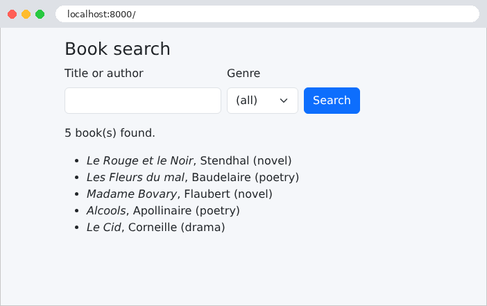
Geben wir [le] ein und wählen den Typ [novel] aus:

Die URL der Ergebnisseite enthält die Formularfelder: [/search?keyword=le&genre=novel]. Die Antwort des Formulars:
„Madame Bovary“ wird nicht ausgewählt: „le“ kommt weder im Titel noch im Namen des Autors vor.
4.6. Beispiel 18: Formularfelder
Dieses Beispiel zeigt alle Feldtypen eines HTML-Formulars, das diesmal per POST gesendet wird. Es zeigt, wie jeder Feldtyp mit seinem aktuellen Wert erneut angezeigt wird, wie der Browser die Werte der einzelnen Felder sendet und wie der Server prüft, dass ein empfangener Wert tatsächlich eine der verfügbaren Optionen ist. All das wie in Beispiel 17 von Hand zu schreiben, wäre mühsam und repetitiv. Die Formulare von [Django], die wir im vorherigen Kapitel zur Validierung von Parametern verwendet haben, können auch angezeigt werden: Jedes Feld hat ein Widget – ein Objekt, das sein Eingabefeld in HTML zusammen mit dem aktuellen Wert erzeugt –, und das Formular zeigt die Eingaben und etwaige Fehler erneut an. Das ist die vollständige Version dessen, was der [Symfony]-Kurs an seine Formular-Komponente delegiert hat und was der [Flask]-Kurs an [WTForms] delegiert hat.
4.6.1. Listen: form/lists.py
Die Dropdown-Listen des Formulars (Anreden, Länder, Hobbys, Sprachen) sind Konstanten in einem Modul: In einer realen Anwendung kämen sie aus einer Datenbank. Jede Liste besteht aus Paaren (Wert, Text): Der Wert wird an den Server gesendet, der Text wird angezeigt (Beispiel 08). Ein Paar wird in Klammern geschrieben: Es ist ein Tupel, eine Folge von Werten, die nicht geändert werden kann.
4.6.2. Das Formular: form/forms.py
- Zeilen 10–23: Eine Basisklasse für unsere Formulare, die jedem Eingabefeld die passende Klasse zuweist (CSS von [Bootstrap]). Sie überschreibt den Konstruktor ([__init__]), der dieselben Parameter erhält wie der von [forms.Form] ([*args], [**kwargs], Beispiel 08), und ruft ihn zunächst auf ([super().__init__(...)]). Das Attribut [fields] des Formulars ist dann ein Dictionary seiner Felder; jedes Feld hat sein eigenes Widget ([field.widget]), dessen Dictionary [attrs] die HTML-Attribute des Eingabefeldes enthält. [isinstance] akzeptiert ein Tupel von Klassen: Gehört das Widget zu einer dieser Klassen? Radiobuttons und Checkboxen erhalten die Klasse [form-check-input], Listen erhalten [form-select], und alle anderen erhalten [form-control];
- Zeilen 28–51: die Felder in der Reihenfolge ihrer Anzeige. Zwei Objekte sind zu unterscheiden: Das Feld ([forms.XxxField]) konvertiert und validiert den Wert wie im vorherigen Kapitel; sein Widget ([forms.XxxInput], [forms.Select] ...) zeichnet das Eingabefeld. Jedes Feld hat ein Standard-Widget, das durch den Parameter [widget] ersetzt wird. Standardmäßig ist das Label eines Feldes sein formatierter Name ([password] würde zu „Password“, [name] zu „Name“); der Parameter [label] legt es fest;
- Zeilen 31–32: Ein [ChoiceField] ist eine Dropdown-Liste. Mit dem Widget [RadioSelect] wird es zu einer Gruppe von Radiobuttons (eine einzige Auswahl). Der Parameter [error_messages] (Beispiel 09) legt die Fehlermeldung „Pflichtfeld“ fest;
- Zeile 34: ein [CharField] (Standard-Widget: [TextInput], ein [<input type="text">]), optional. Ein Pflichtfeld ([required=True], der Standard) erzeugt das HTML-Attribut [required], das der Browser prüft (Beispiel 19);
- Zeile 36: ein Passwort (Widget [PasswordInput], ein [<input type="password">]), das nie an die Seite zurückgegeben wird: Sein Feld ist bei der Anzeige immer leer;
- Zeilen 38–39: ein Datum ([DateField]), dessen Wert ein [date]-Objekt von [Python] sein wird. Das Widget [DateInput] erhält das Attribut [type="date"]: ein Feld [<input type="date">], für das der Browser einen Kalender anzeigt. Ein solches Feld tauscht seinen Wert mit dem Server im Format [yyyy-mm-dd] aus, unabhängig vom Format, in dem der Browser es anzeigt ([DateField] akzeptiert dieses Format);
- Zeilen 41–42: ein [MultipleChoiceField] (Beispiel 10), dargestellt durch das Widget [CheckboxSelectMultiple]: Checkboxen;
- Zeile 44: ein [ChoiceField] mit seinem Standard-Widget [Select]: eine Dropdown-Liste;
- Zeilen 46–48: ein [MultipleChoiceField] mit seinem Standard-Widget [SelectMultiple]: eine Mehrfachauswahlliste, die über vier Zeilen angezeigt wird (das HTML-Attribut [size], festgelegt durch [attrs]);
- Zeile 49: ein Textfeld ([Textarea]) über zwei Zeilen;
- Zeile 51: ein verstecktes Feld ([HiddenInput]).
[Django] bietet außerdem [EmailField] (Beispiel 19), [IntegerField], [DecimalField], [URLField], [BooleanField] (eine einzelne Checkbox), [FileField], [ImageField], [SlugField], [UUIDField], [JSONField] ... und weitere Widgets: [EmailInput], [NumberInput], [CheckboxInput], [ClearableFileInput], [SelectDateWidget] (drei Listen: Tag, Monat, Jahr) ...
4.6.3. Feldlayout: config/rendering.py und Formular-Templates
Ein [Django]-Formular wird automatisch mithilfe von Templates erzeugt: ein Template für das gesamte Formular, eines für jedes vollständige Feld (Label, Eingabefeld, Tooltip, Fehlermeldungen) und eines für jeden Widget-Typ. [Django] stellt alle diese Templates in der Anwendung [django.forms] mit einem neutralen Layout bereit. Um das Layout von [Bootstrap] zu erhalten, ersetzen wir einige davon. Zunächst muss [Django] die Formular-Templates wie die anderen in den Ordnern suchen, die in der Konfiguration [TEMPLATES] festgelegt sind: Das ist die Aufgabe eines Formular-Renderers:
- Zeile 9: [TemplatesSetting] ist der Formular-Renderer, der seine Templates mit der Template-Engine des Projekts sucht: Ein Template aus dem Ordner [templates] des Projekts kann daher ein gleichnamiges Template von [Django] ersetzen. Unsere Klasse erbt dieses Verhalten;
- Zeile 11: Das Attribut [field_template_name] legt das Template für ein vollständiges Feld fest: unseres, [forms/field.html].
Die Konfiguration:
- Zeile 17: die Anwendung [django.forms], die die Formular-Templates von [Django] in ihrem Ordner [templates] bereitstellt;
- Zeilen 21–24: die Middleware zum Schutz vor CSRF (siehe unten);
- Zeile 32: [APP_DIRS: True]: [Django] sucht Templates auch im Ordner [templates] jeder deklarierten Anwendung, einschließlich [django.forms]. Die Ordner aus [DIRS] werden zuerst geprüft: Unsere Templates haben Vorrang vor denen von [Django];
- Zeile 38: Die Einstellung [FORM_RENDERER] legt unsere Rendering-Engine fest.
Das Template für ein vollständiges Feld:
Das Template erhält das darzustellende Feld [field] (ein [BoundField]-Objekt: das Feld, mit dem Formular verbunden und damit mit seinem Wert und seinen Fehlern):
- Zeilen 2–6: Eine Gruppe von Radiobuttons oder Checkboxen ([field.use_fieldset] gilt für diese Widgets) wird von einem [<fieldset>] umgeben, dessen Beschriftung ([<legend>]) das Gruppenlabel ist: Das erwarten Screenreader;
- Zeilen 8–10: Ein anderes Feld hat ein [<label>], das über seinen Bezeichner ([id_for_label]: [id_name], standardmäßig [id_] gefolgt vom Feldnamen) mit dem Eingabefeld verknüpft ist. [{{ field }}] erzeugt das Eingabefeld mithilfe des Templates seines Widgets;
- Zeile 12: der Hilfetext des Feldes (Parameter [help_text] eines Feldes), falls vorhanden;
- Zeile 13: die Fehler des Feldes ([field.errors]) mit den Klassen von [Bootstrap] ([invalid-feedback]: roter Text, [d-block]: immer sichtbar). Ihr Bezeichner [id_name_error] ist derjenige, den [Django] im Attribut [aria-describedby] des Eingabefeldes angibt, damit Screenreader die Meldung zusammen mit dem Feld vorlesen;
- Zeile 14: das schließende Tag zu dem im ersten Teil geöffneten Tag.
Schließlich werden zwei Widget-Templates von [Django] ersetzt, damit Radiobuttons und Checkboxen genauso wie in [Bootstrap] nebeneinander angezeigt werden:
Sie haben exakt dieselben Namen und Pfade wie die Templates von [Django] , die sie ersetzen ([django/forms/widgets/...], zu finden im Ordner [django/forms/templates] der Bibliothek):
- [multiple_input.html] zeichnet die Gruppe: für jede Option ([widget.optgroups]: die Optionen, gruppiert; wir haben keine Untergruppen) ein [<div class="form-check form-check-inline">] , das die Option enthält, gezeichnet mit ihrem eigenen Template ([option.template_name]);
- [input_option.html] stellt eine Option dar: das Eingabefeld ([<input type="radio">] oder [<input type="checkbox">], unter Verwendung des Templates von [Django] und [input.html]), gefolgt von seinem Label.
All das muss nur einmal geschrieben werden: Die Beispiele 19, 21 und 28 sowie die Fallstudie verwenden diese Dateien. Fertige Bibliotheken wie [django-crispy-forms] und sein Paket [crispy-bootstrap5] oder [django-bootstrap5] leisten dasselbe; wir haben es vorgezogen, den Mechanismus zu zeigen.
4.6.4. Die View: form/views.py
- Zeile 9: die Anfangswerte des Formulars: ein Dictionary mit einem Wert pro Feld (eine Liste für ein Feld mit mehreren Werten);
- Zeile 14: eine einzige View für beide Methoden: GET zeigt das Formular an, POST verarbeitet es;
- Zeilen 16–19: bei GET ein ungebundenes Formular (ohne Daten) mit seinen Anfangswerten (Parameter [initial]): Es wird nicht validiert und zeigt keine Fehler an;
- Zeilen 21–22: bei POST ein an die gesendeten Felder gebundenes Formular ([request.POST]), das dann validiert wird ([is_valid], vorheriges Kapitel): Jedes Feld konvertiert seinen Wert (das Datum, die Listen usw.), prüft, dass eine Auswahl zu den angebotenen gehört, und wendet seine Einschränkungen an;
- Zeilen 24–28: Ist das Formular gültig, werden seine Daten ([cleaned_data]) in ein für Menschen lesbares Dictionary konvertiert (mit der Syntax [{key: value for ...}]): Eine Liste wird als Text geschrieben, wobei ihre Elemente durch Kommas getrennt sind ([", ".join(...)]);
- Zeile 31: Für dieses Beispiel das, was der Browser tatsächlich gesendet hat. Die Methode [lists()] eines [QueryDict] (Beispiel 10) durchläuft die Paare (Name, Liste aller Werte). Die Zeichenkette [\n] ist ein Zeilenumbruch;
- Zeilen 32–37: Das gebundene Formular wird an das Template übergeben, das es zusammen mit den Eingaben des Benutzers und etwaigen Fehlern anzeigt.
4.6.5. Das Template: templates/form/form.html
- Zeile 5: Das Tag [<form>] wird von Hand eingegeben: Das [Django]-Formular erzeugt es nicht;
- Zeile 7: Das Tag [{% csrf_token %}] erzeugt ein verstecktes Feld mit dem Anti-CSRF-Token (siehe unten);
- Zeile 9: [{{ form.title }}] bezeichnet das Feld [title] im Formular (ein [BoundField]); seine Methode [as_field_group] stellt es vollständig mit dem Template [forms/field.html] dar: Label, Eingabefeld (mit seinem aktuellen Wert) und Fehlermeldungen;
- Zeilen 10–20: die übrigen Felder, angeordnet nach den Rasterklassen von [Bootstrap];
- Zeile 22: das versteckte Feld, von dem nur das Eingabefeld dargestellt wird;
- Zeile 26: Die Variable [received] existiert erst nach einem Absenden; eine fehlende Variable ist „falsch“;
- Zeilen 32–34: die Fehler. [form.errors] ist ein Dictionary, das mit [items] durchlaufen wird (ohne Klammern, wie in DTL): für jedes Feld die Liste seiner Fehler;
- Zeilen 39–41: eine Schleife über ein Dictionary, die sowohl die Schlüssel als auch die Werte durchläuft.
Wir hätten das gesamte Formular in einer einzigen Zeile schreiben können: [{{ form }}], das alle Felder der Reihe nach mit dem Formular-Template darstellt (Einstellung der Rendering-Engine [form_template_name]). Indem man die Felder einzeln verarbeitet, kann man sie nach Belieben anordnen.
4.6.6. CSRF-Schutz
Ein CSRF-Angriff (Cross-Site Request Forgery) besteht darin, dass eine bösartige Website den Browser des Opfers dazu bringt, ein Formular an unsere Anwendung zu senden. Der Browser schickt die Cookies unserer Anwendung mit der Anfrage mit – und damit die Sitzung des angemeldeten Benutzers –, sodass die Anfrage legitim erscheint. Die Lösung: Jedes Formular unserer Anwendung enthält ein zufälliges Token, das die bösartige Website nicht kennen kann.
[Django] wendet dies über eine Middleware-Komponente, [CsrfViewMiddleware] (Zeile 23 der Datei [config/settings.py]), auf die gesamte Anwendung an. Bei der Erzeugung einer Seite schreibt das Tag [{% csrf_token %}] in das versteckte Feld [csrfmiddlewaretoken], und die Middleware sendet mit der Antwort ein Cookie namens [csrftoken], das ein Geheimnis enthält. Bei jeder ändernden Anfrage (POST, PUT, PATCH, DELETE) prüft die Middleware vor dem Aufruf der View, ob das gesendete Token (im Feld [csrfmiddlewaretoken] oder im Header [X-CSRFToken] bei einer über [JavaScript] gesendeten Anfrage) mit dem Geheimnis des Cookies übereinstimmt. Eine bösartige Website kann weder das Cookie unserer Website lesen noch unsere Seiten einsehen: Sie kann kein gültiges Token erzeugen. Schlägt die Prüfung fehl, wird die View nicht aufgerufen: [Django] antwortet von sich aus mit einem 403-Fehler. Das ist ein wesentlicher Unterschied zu [Symfony], dessen Formular-Komponente das Token für jedes Formular prüfte und es der Action überließ, wie es weitergeht: Bei [Django] sind alle POST-Anfragen geschützt, und eine View kann nicht vergessen, geschützt zu sein. Der Dekorator [@csrf_exempt] nimmt eine View von dieser Prüfung aus (zum Beispiel für eine API, die von anderen Servern aufgerufen wird).
4.6.7. Ausführung

Die Anfangswerte sind sichtbar: der Radiobutton „Mme“, das Land „France“ und die Sprache „French“. Das erzeugte HTML (Auszüge):
[Django] hat alles geschrieben: die Bezeichner ([id_title_1]), die mit ihren Feldern verknüpften Labels, die Feldnamen (alle Checkboxen haben den Namen [hobbies]: Der Browser sendet einen wiederholten Parameter, Beispiel 10), die Attribute [checked] und [selected] für aktuelle Werte, das Attribut [required] für Pflichtfelder und die Klassen von [Bootstrap]. Das erste versteckte Feld enthält das Anti-CSRF-Token; es ist auf jeder Seite anders (es wird durch eine Zufallszahl „maskiert“, damit ein Lauscher im Netzwerk das Geheimnis nicht durch den Vergleich mehrerer Seiten erraten kann). Füllen wir das Formular aus und senden es ab:
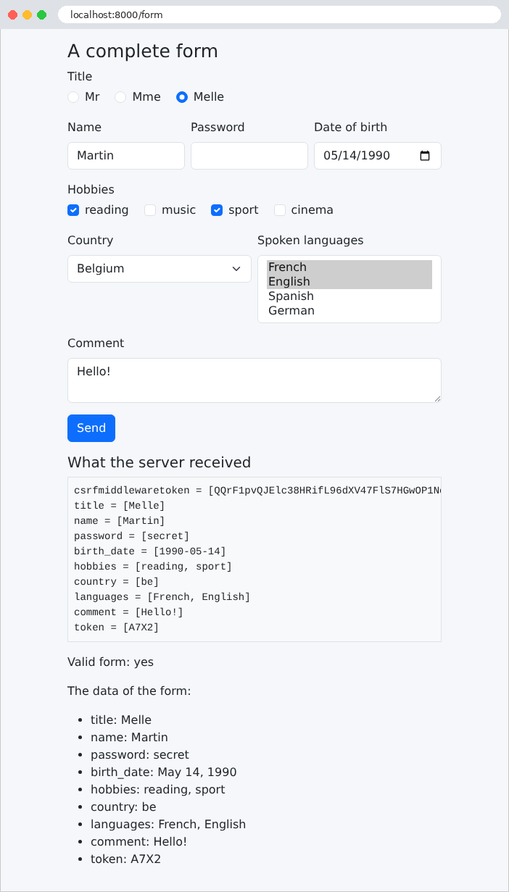
Die Seite zeigt, was der Server empfangen hat: ein Parameter pro Feld, mit mehreren Werten für die Checkboxen und die Dropdown-Liste; das Passwort wurde gesendet, wird aber nicht erneut in seinem Feld angezeigt. Der Browser hat das Datum entsprechend seinen eigenen Einstellungen angezeigt, aber im Format [yyyy-mm-dd] gesendet; das Template hat es im englischen Stil formatiert, [May 14, 1990], wie jedes Datum, das es anzeigt. Das versteckte Feld [token] wurde exakt unverändert zurückgesendet: So werden Informationen hin- und hergeschickt, die der Benutzer nicht sieht (die Fallstudie nutzt dies für die Versionsnummer eines Datensatzes). Ein verstecktes Feld ist jedoch kein geschütztes Feld: Der Benutzer kann es mit den Entwicklertools seines Browsers ändern, und der Server muss es wie jedes andere Feld validieren. Das Anti-CSRF-Token ist ebenfalls unter den empfangenen Feldern enthalten; es gehört nicht zu den Formulardaten.
Senden wir nun ein Formular mit [curl], ohne Token und mit einem Land, das nicht aufgeführt war:
Die Anfrage ist nicht über die Middleware hinausgekommen: Die View wurde nicht aufgerufen, und die Server-Konsole zeigt dies an:
In einem Browser erklärt die Fehlerseite von [Django] den Grund der Ablehnung (im Debug-Modus):
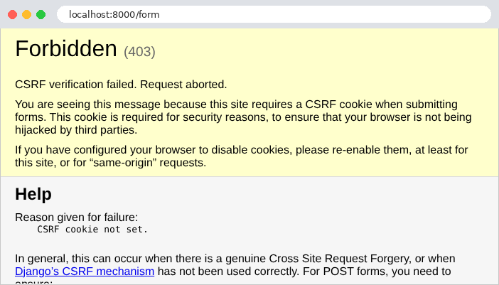
Damit das Token akzeptiert wird, muss sich [curl] wie ein Browser verhalten: zuerst das Formular anfordern und dabei das Cookie [csrftoken] behalten (Option [-c], die empfangene Cookies in einer Datei speichert), dann das Cookie (Option [-b]) und das aus der Seite gelesene Token erneut senden:
(Das Token ist das aus der Seite, die die erste Anfrage geliefert hat.) Diesmal wurde die View aufgerufen, und das Formular ist aus zwei Gründen ungültig: Es wurde keine Anrede gesendet, und das Land [xx] gehört nicht zu den Optionen. Diese letzte Prüfung führt das Feld [ChoiceField] selbst aus, ohne dass wir sie angefordert haben: Ein böswilliger Benutzer könnte alles Beliebige senden, nicht nur das, was die Seite vorgeschlagen hat. Hier gibt die View das ungültige Formular mit dem Statuscode 200 zurück; das folgende Beispiel wählt einen besser geeigneten Statuscode.
4.7. Beispiel 19: Formularvalidierung
Ein Registrierungsformular, in dem jedes Feld eigene Einschränkungen hat. Tritt ein Fehler auf, wird das Formular mit den Eingaben des Benutzers und einer Meldung unter jedem ungültigen Feld erneut angezeigt. Wir fügen eine Regel hinzu, die für zwei Felder gilt: Das Passwort und seine Bestätigung müssen übereinstimmen.
Die Dateien [config/settings.py], [config/rendering.py] und [templates/forms/field.html] entsprechen denen aus Beispiel 18.
4.7.1. Das Formular: registration/forms.py
- Zeilen 7–11: die Elternklasse aus Beispiel 18, vereinfacht: Alle Felder sind Eingabefelder;
- Zeilen 17–19: Der Name ist erforderlich und darf höchstens 20 Zeichen lang sein. Jeder Fehler erhält anhand seines Codes eine eigene Meldung (Beispiel 09). Der Parameter [max_length] hat zwei Wirkungen: Das Feld prüft die Länge (auf dem Server), und sein Widget setzt das HTML-Attribut [maxlength], das die Eingabe im Browser begrenzt ([min_length] bewirkt dasselbe mit dem Attribut [minlength]);
- Zeilen 21–23: Ein [EmailField] prüft, ob eine Adresse gültig ist, und verlangt einen vollständig qualifizierten Domainnamen ([example.com], nicht [example]). Sein Widget [EmailInput] erzeugt ein [<input type="email">], das der Browser validieren kann;
- Zeilen 25–29: Ein [IntegerField] erzeugt ein [<input type="number">] mit den Attributen [min] und [max] , abgeleitet aus [min_value] und [max_value], und wandelt die Eingabe in eine ganze Zahl um. Eine Eingabe, die keine ganze Zahl ist, erzeugt den Fehler [invalid];
- Zeilen 30–35: das Passwort (mindestens 6 Zeichen) und seine Bestätigung, zwei [CharField]-Felder , die das [PasswordInput]-Widget verwenden. Ein Parameter kann sich über mehrere Zeilen erstrecken;
- Zeilen 39–47: Die Methode [clean] validiert das gesamte Formular nach der Validierung jedes einzelnen Feldes (und seiner Methoden [clean_<field>], Beispiel 12). [super().clean()] liefert [cleaned_data] zurück, das nur die gültigen Felder enthält: [data.get("password")] ist gleich [None] , wenn das Passwort bereits abgelehnt wurde (zu kurz). Der Vergleich erfolgt nur, wenn beide Felder gültig sind; weichen sie voneinander ab, [add_error] ordnet dem Feld [confirmation] einen Fehler zu ([add_error(None, "...")] würde ihn dem Formular selbst zuordnen: ein „allgemeiner“ Fehler, der von [non_field_errors()] zurückgegeben wird). So validiert man eine Regel, die für mehrere Felder gilt.
4.7.2. Die View: registration/views.py
- Zeile 13: Der Parameter [?html5=true] aktiviert die Browser-Validierung (siehe unten);
- Zeilen 15–20: ein Formular, das mit den übermittelten Feldern verbunden ist. Ist es gültig, erhält die Willkommensseite seine Daten (das folgende Beispiel wird zeigen, dass es besser ist, nach einem erfolgreichen POST umzuleiten);
- Zeilen 23–24: Andernfalls wird das Formular mit den Eingaben und eventuellen Fehlern erneut angezeigt, zusammen mit dem Code 422 (Unprocessable Content: „Die Anfrage ist wohlgeformt, ihr Inhalt ist jedoch ungültig“);
- Zeilen 26–27: Bei der ersten Anzeige wird ein leeres, ungebundenes Formular angezeigt.
Das ungültige Formular wird also von der POST-View selbst erneut angezeigt, die Eingaben und Fehler beibehält: Das ist das Standardvorgehen von [Django] wie auch von [Symfony]. Andere Frameworks wie [Laravel] antworten stattdessen mit einer Umleitung auf die Formularseite und bewahren Eingaben und Fehler in der Session für die nächste Anfrage auf.
4.7.3. Templates
- Zeilen 5–9: ein Link zum Aktivieren oder Deaktivieren der Browser-Validierung;
- Zeile 11: Das Attribut [novalidate] deaktiviert die Browser-Validierung: Das Formular wird unverändert gesendet, und nur der Server validiert es. Genau das wollen wir zunächst beobachten. Das Formular hat nicht das Attribut [action]: Es wird an die URL der aktuellen Seite gesendet;
- Zeilen 14–16: eine Schleife über das Formular selbst: Sie durchläuft seine Felder in der Reihenfolge ihrer Deklaration, wobei jedes Feld vollständig gerendert wird;
- Zeilen 21–26: der Block [page_bottom], der vom Eltern-Template definiert wird (siehe unten). [form.errors] ist vor dem Absenden leer oder wenn alles gültig ist. Enthält das Formular Fehler, erscheint eine allgemeine Meldung in einem Feld, dessen Stil durch [static/css/styles.css] definiert ist (Beispiel 15). Das Attribut [role="alert"] kennzeichnet dies für Screenreader.
- Zeile 17: ein zweiter Block, [page_bottom], standardmäßig leer: Ein Template kann beliebig viele Blöcke haben.
[registration] ist das Dictionary der validierten Daten: Die Leerzeichen im Namen wurden entfernt (siehe unten), und das Alter ist eine ganze Zahl.
4.7.4. Ausführung
Senden wir ein Formular voller Fehler: ein Name aus Leerzeichen, eine Adresse ohne vollständige Domain, ein Alter von 12, ein zu kurzes Passwort und eine abweichende Bestätigung:
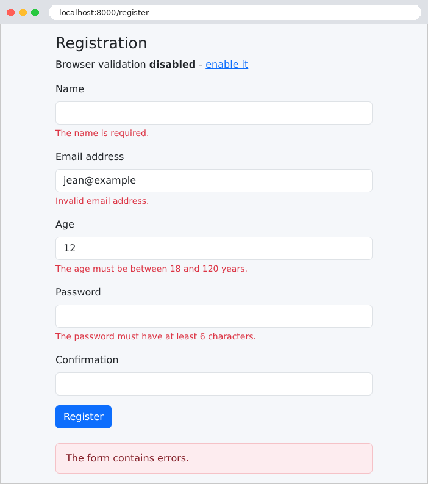
Die Eingaben wurden beibehalten (außer den Passwörtern), und jeder Fehler wird unter dem zugehörigen Feld angezeigt. Der aus Leerzeichen bestehende Name wird als fehlend gemeldet: Ein ***[CharField] entfernt die Leerzeichen am Anfang und Ende jeder Eingabe (Parameter ***[strip]***, Beispiel 08) und zeigt den bereinigten Wert erneut an. Die Bestätigung enthält hingegen keinen Fehler, obwohl sie sich vom Passwort unterscheidet: Da das Passwort abgelehnt wurde, hat die Methode [clean]* die beiden nicht verglichen. Die URL ist die des Formulars, [/register]: Die Seite wurde von der View als Antwort auf POST angezeigt. Mit [curl] können Sie, indem Sie wie in Beispiel 18 das Anti-CSRF-Token mitsenden, auch etwas senden, was ein Browser nicht senden würde: ein nicht numerisches Alter:
Wir sehen die erneut angezeigten Eingaben, die HTML5-Attribute ([required], [min], [max]), die Fehlermeldung [invalid] und die Attribute [aria-invalid] und [aria-describedby], die [Django] einem fehlerhaften Feld automatisch hinzufügt und die das Feld für Screenreader mit seiner Meldung verknüpfen.
4.7.5. Browser-Validierung
Entfernen wir das Attribut [novalidate] durch einen Klick auf den Link „Enable“ (Parameter [?html5=true]). Der Browser prüft dann die Attribute [required], [type="email"], [min], [max], [maxlength] ... vor dem Absenden des Formulars und zeigt eigene Meldungen in einem Tooltip unter dem ersten fehlerhaften Feld an („Bitte füllen Sie dieses Feld aus“, „Der Wert muss größer oder gleich 18 sein“ usw.): Solange ein Fehler vorliegt, wird das Formular nicht gesendet. [Django] hat diese Attribute automatisch anhand der Felder erzeugt: [required] für jedes Pflichtfeld, [maxlength] und [minlength] anhand von [max_length] und [min_length], [min] und [max] anhand von [min_value] und [max_value], [type="email"] und [type="number"] anhand der Widgets. Sie stimmen daher stets mit den Einschränkungen des Servers überein. Nur die Regel der Methode [clean] (Bestätigung) wird vom Browser nicht berücksichtigt.
Diese Validierung ist für den Benutzer komfortabel: Sie erfolgt sofort, ohne Hin und Her mit dem Server. Sie ersetzt jedoch nicht die Validierung des Servers: Ein Benutzer kann sie deaktivieren, und ein Programm wie [curl] ignoriert sie vollständig. Die Regel gilt uneingeschränkt: Der Server validiert immer; die Browser-Validierung ist lediglich ein zusätzlicher Komfort.
Endlich eine korrekte Eingabe. Der Name, der mit Leerzeichen davor und danach eingegeben wurde, wurde vom Formular bereinigt:
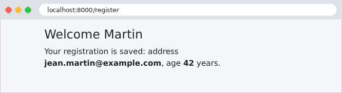
4.8. Beispiel 20: Das Muster Post/Redirect/Get
Wenn eine POST-View mit einer Seite antwortet, ist diese Seite das Ergebnis eines POST. Lädt der Benutzer sie neu (drückt er [F5]), sendet der Browser den POST erneut, nach einer Warnung, die nur wenige lesen: Der Befehl wird zweimal gesendet, und die Nachricht wird zweimal veröffentlicht. Das Muster Post/Redirect/Get (PRG) vermeidet dieses Problem: Eine erfolgreiche POST-View rendert keine Seite, sondern antwortet mit einer Umleitung (Beispiel 04) auf eine GET-Seite, die der Browser sofort anfordert. Das Neuladen dieser Seite führt einfach das GET erneut aus.
Ein Problem bleibt: Die GET-Seite möchte eine Meldung anzeigen („Die Aufgabe wurde hinzugefügt“), aber diese Meldung kennt die POST-View, und sie kann keine Variable an eine Anfrage übergeben, die noch nicht stattgefunden hat. Die Lösung: eine Flash-Meldung, die von der POST-View abgelegt, bis zum Lesen aufbewahrt, angezeigt und dann verworfen wird. [Django] stellt sie über seine Anwendung [django.contrib.messages] bereit.
4.8.1. Konfiguration: config/settings.py
- Zeile 17: die Anwendung für Meldungen;
- Zeilen 21–26: ihre Middleware [MessageMiddleware], die zu Beginn jeder Anfrage die anstehenden Meldungen liest und am Ende diejenigen speichert, die nicht gelesen wurden (sowie eventuelle neue);
- Zeile 30: Die Einstellung [MESSAGE_STORAGE] bestimmt, wo die Meldungen zwischen den Anfragen gespeichert werden: hier in einem Cookie (siehe unten). Standardmäßig versucht [Django] es zuerst mit dem Cookie und dann, wenn die Meldung zu groß ist, mit der Session (siehe das Kapitel über Gültigkeitsbereiche); unser Beispiel hat keine Session;
- Zeilen 37–40: der Kontextprozessor für Meldungen: Er stellt allen Templates die Variable [messages] zur Verfügung.
4.8.2. Der Service: tasks/service.py
Die Aufgabenliste wird von allen Benutzern gemeinsam genutzt und muss von einer Anfrage zur nächsten erhalten bleiben. Das haben wir in den Beispielen 01 und 06 gesehen: In [Python] bleibt der Server von einer Anfrage zur nächsten im Speicher. Eine einfache Modulvariable genügt daher. Leser des Kurses zu [Symfony] werden sich erinnern, dass die Liste in [PHP] in einem Cache oder einer Datei gespeichert werden musste.
- Zeile 8: die Liste, eine Modulvariable. Sie existiert, solange der Serverprozess läuft: Sie geht verloren, wenn der Server heruntergefahren oder neu gestartet wird (nach einer Codeänderung während der Entwicklung). Und wenn der Produktionsserver mehrere Prozesse ausführt (was gängige Praxis ist: zum Beispiel einen pro Prozessor), hat jeder seine eigene Liste. Eine reale Anwendung würde die Liste daher in einer Datenbank speichern (Kapitel 7);
- Zeile 12: Der Entwicklungsserver bearbeitet mehrere Anfragen gleichzeitig, jede in ihrem eigenen Thread. Zwei gleichzeitige Änderungen könnten kollidieren. Eine Sperre ([threading.Lock]) stellt sicher, dass immer nur ein Thread den geschützten Code ausführt;
- Zeilen 15–18: Die Funktion gibt eine Kopie der Liste zurück, die unter dem Schutz der Sperre erstellt wird;
- Zeilen 21–24: Die Anweisung [with] erwirbt die Sperre, führt den Block aus und gibt die Sperre dann wieder frei – in jedem Fall, auch wenn eine Ausnahme den Block unterbricht. Ein Objekt, das von [with] verwendet werden kann, heißt Kontextmanager; Dateien sind ein weiteres Beispiel ([with open(...) as f:] schließt die Datei am Ende des Blocks).
Der Service ist ein Modul, keine Klasse: Seine Funktionen werden mit [service.list_tasks()] und [service.add(...)] aufgerufen. Das ist in [Python] der einfachste Weg, ein einziges Objekt für die gesamte Anwendung gemeinsam zu nutzen (Beispiel 06).
4.8.3. Views: tasks/views.py
- Zeilen 16–22: Die Eingabe wird manuell validiert, um das Beispiel knapp zu halten ([strip] entfernt die umgebenden Leerzeichen). Eine ungültige Eingabe wird ohne Umleitung erneut angezeigt: Es gibt nichts, was vor einer doppelten Übermittlung geschützt werden müsste, da nichts verändert wurde;
- Zeile 25: [messages.success] legt eine Flash-Meldung der Stufe „success“ ab (es gibt auch [debug], [info], [warning], und [error]: Anhand der Stufe lassen sich Meldungen unterschiedlich darstellen);
- Zeile 27: die Umleitung auf die GET-Seite mit dem Namen [tasks] (Beispiel 04);
- Zeilen 31–34: das Gegenbeispiel: eine Seite als Antwort auf POST. Der Operator [or] gibt seinen linken Operanden zurück, wenn dieser „wahr“ ist (hier ein nicht leerer String), andernfalls den rechten Operanden.
4.8.4. Die Templates
- Zeilen 14–16: [messages] enthält die anstehenden Flash-Meldungen. Das Durchlaufen markiert sie als gelesen: Die Middleware entfernt sie am Ende der Anfrage; eine Flash-Meldung wird nur einmal angezeigt. Die Klasse [alert alert-success] von [Bootstrap] zeigt die Meldung in einem grünen Rahmen an. Jede Meldung hat außerdem eine Stufe ([message.level]) und Labels ([message.tags]: [success] ...), die ihre Darstellung bestimmen.
- Zeile 11: das Anti-CSRF-Token: Die Middleware [CsrfViewMiddleware] ist aktiv (Zeile 22 der Datei [config/settings.py]);
- Zeile 12: Die Variable [label] existiert nur nach einer ungültigen Eingabe: Eine fehlende Variable wird als leerer String angezeigt;
- Zeile 15: Das Attribut [formaction] einer Schaltfläche sendet das Formular an eine andere Adresse als die ihres Attributs [action]: Ein einzelnes Formular kann so zwei verschiedene Views auslösen;
- Zeilen 17–22: die Fehlermeldung und die Warnung des Gegenbeispiels.
4.8.5. Wo werden Flash-Meldungen gespeichert?
Zwischen der POST-Anfrage und der folgenden GET-Anfrage muss die Meldung irgendwo gespeichert werden. Wir haben uns für ein Cookie entschieden. Untersuchen wir es mit [curl], indem wir die Cookies in einer Datei speichern (Optionen [-c] und [-b], Beispiel 18), nachdem wir die Seite angefordert haben, um das Anti-CSRF-Token zu erhalten:
Die Antwort auf POST ist eine Umleitung (Statuscode 302, Header [Location]), begleitet vom Cookie [messages]. Dieses Cookie ist [HttpOnly] (das [JavaScript] der Seite kann es nicht lesen) und [SameSite=Lax] (der Browser sendet es nicht mit einer POST-Anfrage, die von einer anderen Website stammt). Sein Wert besteht aus drei durch Doppelpunkte getrennten Teilen: den Daten, einem Datum (in Basis 62 kodiert) und einer Signatur. Die Daten sind die Liste der Meldungen in JSON, Base64-kodiert (sie sind hier nicht komprimiert: [Django] komprimiert die Daten nur, wenn sie dadurch kürzer werden, und ein komprimierter Wert beginnt mit einem Punkt). Dekodiert ergibt sich:
Man erkennt die Stufe der Meldung (25: success) und ihren Text. Der Inhalt des Cookies ist also nicht geheim: Jeder kann ihn dekodieren. Er ist aber signiert: Die Signatur wird aus den Daten und dem geheimen Schlüssel der Anwendung berechnet ([SECRET_KEY], Beispiel 01). Sendet der Browser ein verändertes Cookie zurück, stimmt die Signatur nicht mehr, und [Django] ignoriert es: Ein Benutzer kann keine gefälschten Meldungen erzeugen. Folgen wir der Umleitung und senden das Cookie zurück:
Die Meldung wird angezeigt; die Middleware löscht das Cookie, da sie gesehen hat, dass es gelesen wurde (ein leeres Cookie, das 1970 abgelaufen ist). Eine neue GET-Anfrage würde die Meldung nicht mehr anzeigen. Der Header [Vary: Cookie] weist Caches darauf hin, dass die Antwort von den Cookies der Anfrage abhängt. Die Aufgabenliste wiederum liegt im Speicher des Servers.
4.8.6. Ausführung
Hinzufügen einer Aufgabe: Der Browser ist der Umleitung gefolgt; die URL in der Kopfzeile entspricht der GET-Seite, die man gefahrlos neu laden kann.
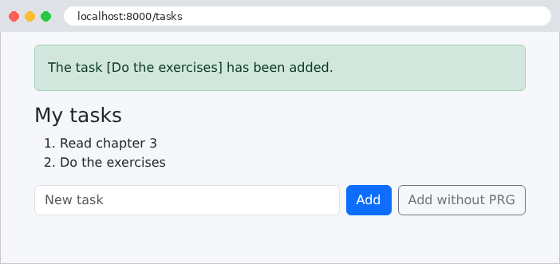
Eine ungültige Eingabe, erneut angezeigt mit ihrer Fehlermeldung:

Das Gegenbeispiel: Die Seite ist die Antwort auf POST, und ihre URL lautet [/tasks/without-prg]. Wenn Sie auf [F5] drücken, fragt der Browser, ob das Formular erneut gesendet werden soll; stimmen Sie zu, wird die Aufgabe ein zweites Mal hinzugefügt.

4.9. Beispiel 21: Links, Schaltflächen und Bestätigung
Ein Grundsatz des HTTP-Protokolls: Eine GET-Anfrage verändert nichts. Browser, Suchmaschinen und Werkzeuge, die Seiten vorab laden, folgen Links bedenkenlos, ohne den Benutzer um Erlaubnis zu fragen. Ein Link zum „Löschen“ ([<a href="/contacts/2/delete">]) wäre daher gefährlich: Ein Bot, der die Website durchsucht, würde alles löschen. In einer Webanwendung gilt:
- Das Anzeigen erfolgt über einen Link ([<a href>]), der eine GET-Anfrage sendet;
- das Ändern (speichern, duplizieren, löschen) erfolgt über eine Schaltfläche in einem Formular, das durch ein Anti-CSRF-Token geschützt ist.
Dieses Beispiel verwaltet eine Kontaktliste und zeigt vor jedem Löschen ein Bestätigungsfenster an.
4.9.1. Methodensimulation: config/middleware.py
Ein HTML-Formular kann nur GET- und POST-Anfragen senden. Das HTTP-Protokoll unterstützt jedoch weitere Methoden: DELETE zum Löschen sowie PUT und PATCH für Aktualisierungen. Viele Frameworks umgehen diese Einschränkung: Ein POST-Formular, das ein verstecktes Feld [_method] mit dem Wert [DELETE] (oder [PUT], [PATCH]) enthält, wird als Anfrage mit dieser Methode behandelt. Dies nennt man Method Spoofing. [Symfony] bot dies als Option an; [Django] tut das nicht. Implementieren wir es als Middleware:
- Zeile 6: ein Klassenattribut: die Menge ([set], in geschweifte Klammern eingeschlossen) der akzeptierten Methoden;
- Zeilen 11–12: [__call__] reicht die Anfrage weiter, ohne etwas zu tun;
- Zeilen 17–22: die Methode [process_view]: [Django] ruft sie nach dem Routing auf, unmittelbar vor dem Aufruf der View, mit der ausgewählten View und ihren Parametern (das Kapitel über den Lebenszyklus wird dies im Detail behandeln). Ist die Anfrage ein POST, dessen Feld [_method] auf eine der akzeptierten Methoden verweist, ersetzt die Middleware die Methode in der Anfrage. Die Rückgabe von [None] lässt die Anfrage ihren Weg fortsetzen.
Warum [process_view] und nicht [__call__]? Wegen des Anti-CSRF-Schutzes. Die Middleware [CsrfViewMiddleware] führt ihre Validierung in ihrer eigenen Methode [process_view] durch, die vor unserer aufgerufen wird, da sie in der Konfiguration [MIDDLEWARE] vor ihr steht. Das Token wird also bei der POST-Anfrage validiert, bevor wir sie in DELETE umwandeln. Das besagt der Kommentar in der Datei [config/settings.py]:
- Zeilen 23–27: drei Middleware-Komponenten: Anti-CSRF-Schutz, Meldungen (Beispiel 20) und Methodensimulation, in dieser Reihenfolge;
- Zeile 44: die Engine zum Rendern von Formularen aus Beispiel 18.
4.9.2. Der Service: contacts/service.py
Die Kontakte werden im Speicher abgelegt, genau wie die Aufgaben in Beispiel 20. Jeder Kontakt ist ein unveränderliches Objekt [Contact] (eine ID, ein Name, eine Telefonnummer, Datei [contacts/viewmodels.py]). Einige Anmerkungen zu [Python]:
- Zeile 12: der zuletzt vergebene Bezeichner;
- Zeilen 27–36: Ein Kontakt ist unveränderlich; wir erstellen einen neuen, der den alten in der Liste ersetzt. [enumerate] durchläuft eine Liste in Paaren (Position, Element);
- Zeilen 39–47: Eine Funktion, die einer Modulvariablen einen Wert zuweist, muss sie mit [global] deklarieren (Zeile 42): Ohne dieses Schlüsselwort würde die Zuweisung [_last_id += 1] eine lokale Variable der Funktion erzeugen (und hier fehlschlagen, da sie ihren Wert vor der Zuweisung liest). Das Lesen einer Modulvariablen oder das Ändern der Liste, auf die sie verweist ([_contacts.append(...)]), erfordert nichts dergleichen;
- Zeile 55: [pop(i)] entfernt das Element an der Position [i] aus der Liste und gibt es zurück;
- Die Funktionen geben für einen nicht vorhandenen Kontakt [None] zurück: Es ist Sache der View, über die Antwort zu entscheiden.
4.9.3. Das Formular für den Datensatz: contacts/forms.py
Beide Felder sind erforderlich und haben die Klasse „[form-control]“ von „[Bootstrap]“, die direkt ihrem Widget zugewiesen wird. Die Schaltflächen sind nicht Teil eines „[Django]“-Formulars: Sie sind fest im Template codiert.
4.9.4. Views: contacts/views.py
- Zeilen 13–16: eine Hilfsfunktion – ein nicht vorhandener Kontakt liefert eine 404-Antwort, um die View zu beenden;
- Zeilen 20–22: die GET-View der Liste, die nichts verändert;
- Zeilen 27–48: der Datensatz eines Kontakts. Bei GET zeigt sie das Formular mit den Daten des Kontakts an; bei POST verarbeitet sie das Formular; bei DELETE löscht sie den Kontakt. Dieselbe URL [/contacts/2] dient also zum Anzeigen, Speichern und Löschen. Der Dekorator [require_http_methods] wird beim Aufruf der View geprüft, also nach [process_view]: Er sieht tatsächlich die Methode DELETE;
- Zeilen 35–37: Ein ungültiges Formular wird erneut angezeigt;
- Zeilen 42–47: Ein Formular kann mehrere Absende-Schaltflächen haben. Beim Absenden sendet der Browser zusätzlich zu den Feldern den Namen (Attribut [name]) der angeklickten Schaltfläche, und nur dieser. [in] prüft, ob ein Schlüssel in einem Dictionary vorhanden ist: ["duplicate" in request.POST] ist wahr, wenn das Formular über die Schaltfläche [duplicate] gesendet wurde. Je nach Schaltfläche dupliziert die View den Kontakt oder speichert ihn;
- Zeile 48: in beiden Fällen der PRG-Ablauf (Beispiel 20) mit einer Flash-Meldung;
- Zeilen 52–55: das Löschen. Das Anti-CSRF-Token muss hier nicht geprüft werden: [CsrfViewMiddleware] hat dies bereits zuvor getan. Ein fehlendes oder ungültiges Token hätte die Anfrage mit einem 403-Fehler gestoppt.
4.9.5. Die Templates
- Zeile 13: ein Link, der durch die Klassen von [Bootstrap] ([btn] ...) als Schaltfläche dargestellt wird: Das Erscheinungsbild hat nichts mit der HTTP-Methode zu tun. [{% url 'contacts_details' contact.id %}] setzt die ID in den Pfad ein: [/contacts/2];
- Zeilen 15–21: ein Formular für jede Schaltfläche „Delete“, ohne weitere Felder als das Token und die Methode. Die Klasse [d-inline] zeigt es in derselben Zeile wie den Link an. Das Attribut [data-confirmation] enthält die Bestätigungsmeldung: Die Attribute [data-...] werden vom Browser nicht ausgewertet und sind für das [JavaScript] der Seite bestimmt;
- Zeile 17: das Anti-CSRF-Token;
- Zeile 19: das versteckte Feld [_method], das diesen POST in eine DELETE-Anfrage verwandelt.
- Zeilen 11–12: die beiden Schaltflächen zum Absenden des Formulars, jede mit eigenem Namen;
- Zeile 13: der Link zurück zur Liste.
4.9.6. Das Bestätigungsfenster
Der Browser kann ein Bestätigungsfenster anzeigen (Funktion [JavaScript] [confirm]), das aber wenig ansprechend ist und dessen Aussehen vom Browser abhängt. Hier verwenden wir ein modales Fenster von [Bootstrap], das durch einige Zeilen [JavaScript] angezeigt wird. Das Fenster ist ein Fragment, das in das Eltern-Template eingebunden wird und daher auf allen Seiten vorhanden ist – wenn auch verborgen:
- Zeile 2: Die Klasse [d-none] von [Bootstrap] blendet das Element aus;
- Zeilen 3–4: der graue Hintergrund und anschließend das Fenster werden durch Klassen von [Bootstrap] gezeichnet;
- Zeile 11: die Position der Meldung;
- Zeilen 14–15: die beiden Schaltflächen vom Typ [button] (nicht [submit]: Sie senden kein Formular ab), unterschieden durch ihr Attribut [data-action].
- Zeilen 12–14: Flash-Meldungen (Beispiel 20);
- Zeile 20: das Fenster, eingebunden in alle Seiten;
- Zeile 22: das Skript am Ende der Seite: Wenn es ausgeführt wird, existieren die gesuchten Elemente bereits. Es ist eine statische Datei im Ordner [static/js].
Das Skript [static/js/app.js]:
- Zeile 3: Der Code ist in eine anonyme Funktion eingeschlossen, die sofort ausgeführt wird; ihre Variablen stören die der anderen Skripte auf der Seite nicht;
- Zeilen 4–6: das Fenster, die Stelle der Meldung und das Formular, das auf Bestätigung wartet;
- Zeilen 9–16: Für jedes Formular mit dem Attribut [data-confirmation] wird das Ereignis [submit] – ausgelöst beim Absenden des Formulars – abgefangen. [preventDefault()] setzt das Absenden aus; das Formular wird in den Wartezustand versetzt, und seine Meldung ([dataset.confirmation], der Wert des Attributs [data-confirmation]) wird in dem erscheinenden Fenster angezeigt;
- Zeilen 19–27: ein einziger Handler für Klicks im Fenster: [event.target] ist das angeklickte Element; sein Attribut [data-action] gibt an, um welche Schaltfläche es sich handelt. „Yes“ sendet das wartende Formular mit der Methode [submit()] ab, die – anders als ein Klick auf eine Schaltfläche – das Ereignis [submit] nicht auslöst (andernfalls würde das Fenster erneut erscheinen); „No“ blendet das Fenster aus.
Ohne [JavaScript] wird das Formular einfach ohne Bestätigung abgesendet: Die Seite bleibt benutzbar. Das ist Progressive Enhancement: [JavaScript] bietet zusätzlichen Komfort, aber die Anwendung hängt nicht davon ab.
4.9.7. Ausführung
Die Kontaktliste:

Ein Klick auf „Delete“ zeigt das Bestätigungsfenster an:
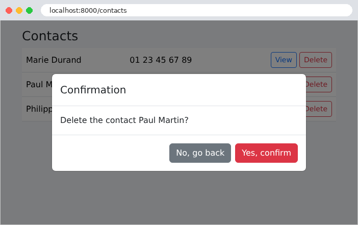
Nach der Bestätigung: die (simulierte) DELETE-Anfrage, die Umleitung und die Pop-up-Meldung:

Der Datensatz eines Kontakts mit seinen beiden Absende-Schaltflächen:
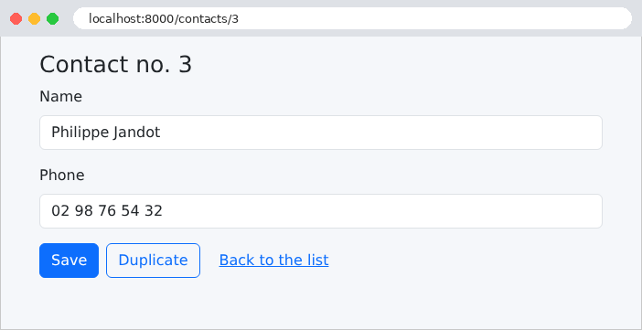
Eine Anfrage ohne Anti-CSRF-Token wird abgelehnt, und ein nicht vorhandener Kontakt liefert einen 404-Fehler:
Die Fehlerseiten sind weiterhin die ausführlichen Seiten aus dem Debug-Modus von [Django]. Das Kapitel über den Lebenszyklus einer Anfrage wird zeigen, wie man sie durch eigene Seiten ersetzt.